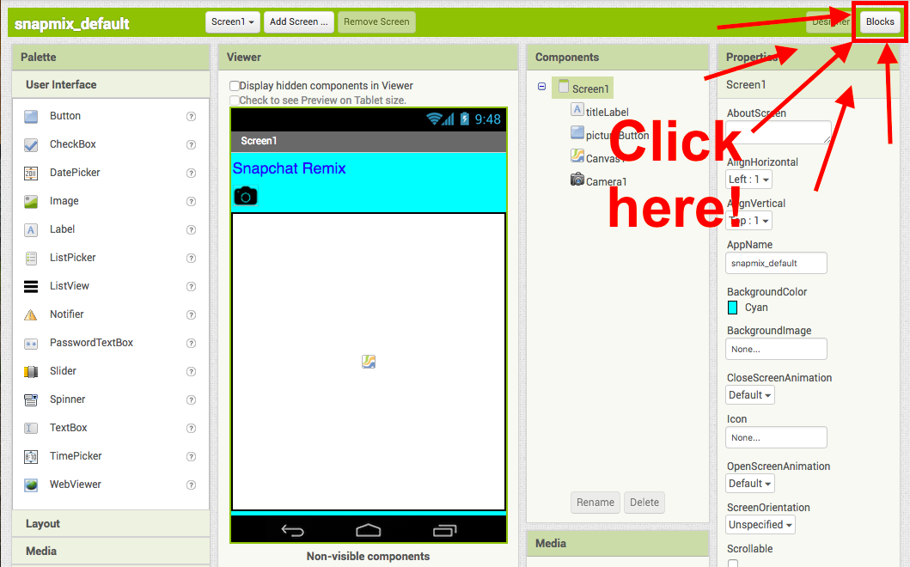
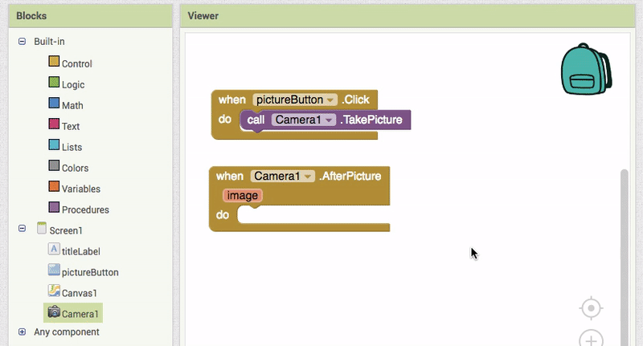
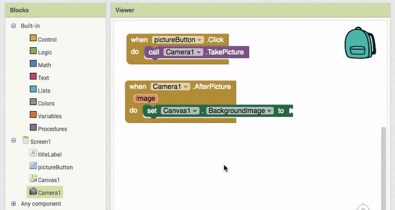
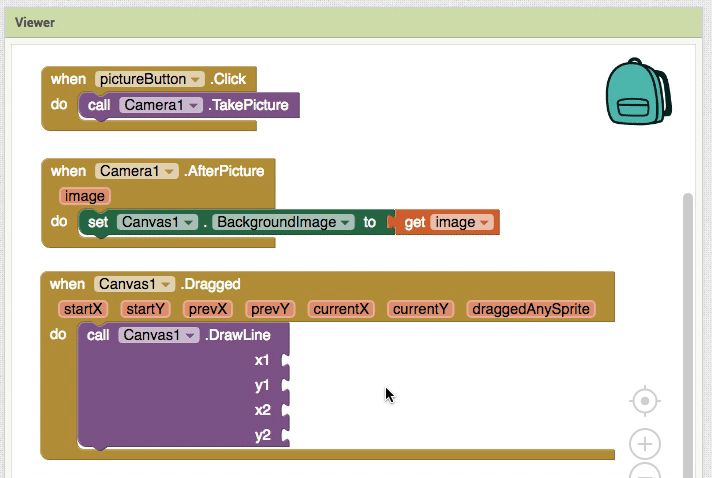
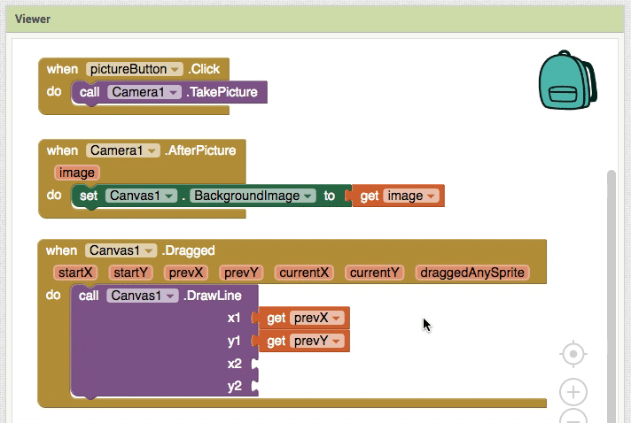
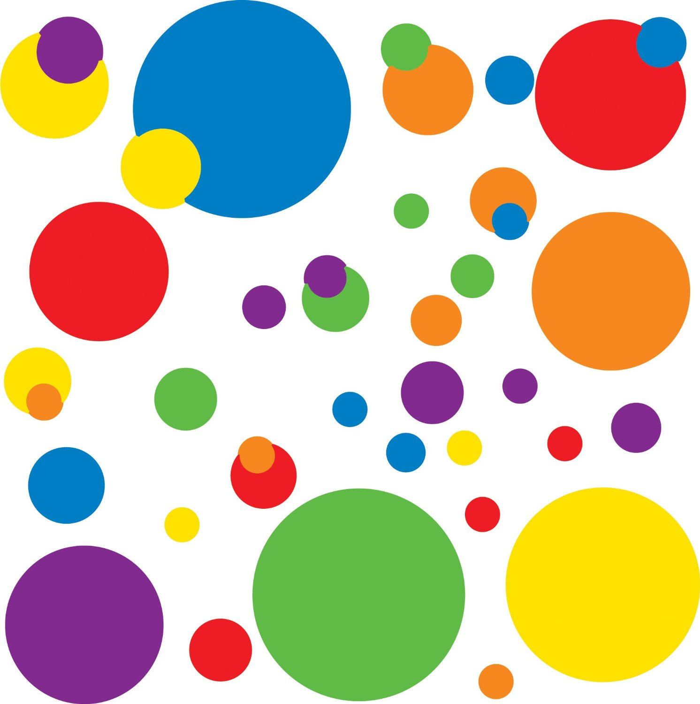
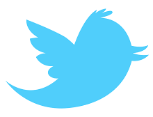

Youth Mobile Power Challenge
When Snapchat went public in Spring 2017, NPR turned to Youth Radio to help listeners understand the huge appeal of the app, which teens understand intuitively, while older people can--let’s be honest--be completely clueless about how it even works.
Whether you love Snapchat or hate it, use this tutorial to make your bootleg version. Your app will let users take a photo, draw on it, add things to it, and send it to your friends. We can’t wait to see what you come up with from there!
Check out Youth Radio’s Snapchat story for NPR here.
Connect your App
Snapchat Remix Tutorial
1. Introduction
Let's make an app that can take a photo and set it as the background, and draw on the image.
This is the initial screen you will see in the viewer. The components include a label, a button, a canvas, and a camera.

2. Add Button click event
Click on the "Blocks" button in the upper right corner.
Click pictureButton and drag when pictureButton.Click to the Viewer.

3. Take a photo on click
Click on the Camera1 drawer and drag out call Camera1.TakePicture and add it to when pictureButton.Click.

Try out your app! See if your app takes a picture when you press the camera button.
4. Begin to set the Canvas background to the image.
Click on Camera1 again and drag out the when Camera1.AfterPicture block to the Viewer.

5. Set the background image.
Now, click Canvas1 in Blocks and drag out set Canvas1.BackgroundImage to and add it to when Camera1.AfterPicture.
6. Set background image using the image you just took.
Hover over "image" on the when Camera1.AfterPicture block and click on get image. Connect it to set Canvas1.BackgroundImage to.
7. Add when Canvas1.Dragged.
Click on Canvas1 and add when Canvas1.Dragged to the Viewer.

8. Add call Canvas1.DrawLine.
Click on Canvas1 again and add the call Canvas1.DrawLine to the when Canvas1.Dragged block.

This procedure tells the app where each line starts and ends.
9. Add get prevX to "x1"
Hover over startX on call Canvas1.DrawLine and click on get prevX. Add it to the "x1" socket of call Canvas1.DrawLine.
10. Add get prevY to "y1"
Repeat with get prevY.

11. Add get currentX to "x2"
And get currentX.
12. Add get currenty to "y2"
And finally, get currenty.

13. Test your app!
With your app connected, can you:
- Take a picture
- Set the picture to the canvas background
- Draw on your image with your finger
If so, move on to the next section where you can add expansions!
Expand your app
Shake your device to clear your drawing.
Add an accelerometer sensor that clears the canvas when shaken.
Draw dots on your picture.
Use the draw circle block to draw dots on your picture.
Add an image you've already taken to the canvas background.
Use the image picker component to select an image from your device.
 Change the color of your lines and dots.
Use buttons to change the color of your paint and even create a random color button.
Add text to the canvas
Use a new button and text box to add text to the center of the canvas.
Create a share button to send your picture to your friends.
Use the sharing component to grab and send your picture.
 Create a Twitter button.
Use the Twitter component to share your picture with the world!
Share your App
Published apps